Journal
Di Simona Reale
L’attaccatura è la linea da cui i capelli nascono sulla fronte e ai lati del viso. È il primo punto che lo sguardo incontra e, nella tricopigmentazione, il punto da cui parte tutto il progetto. Una linea proporzionata, coerente con il resto del volto e studiata nel dettaglio in altezza, forma e densità rende credibile l’intero risultato; una linea sbagliata lo compromette, anche se il resto del lavoro è eseguito bene.
L’attaccatura è il punto in cui finisce la pelle della fronte e comincia il cuoio capelluto con i capelli. Il suo nome più diffuso è l’inglese hairline; alcuni operatori la chiamano anche headline, altri linea frontale o zona frontale, altri ancora linea dell’attaccatura. Sono modi diversi di indicare la stessa linea. Da non confondere con la stempiatura, che indica invece i capelli che arretrano agli angoli della fronte, sulle tempie.
Un dettaglio utile da ricordare: la pelle della fronte si muove quando alziamo le sopracciglia, quella del cuoio capelluto resta ferma. È su questa differenza che si fonda il limite del progetto, di cui parlo più avanti.
Non esiste un’unica attaccatura: le forme naturali sono diverse e gli studi che le hanno classificate ne distinguono cinque principali. L’attaccatura rotonda ha un profilo morbido e curvo, più frequente nei visi femminili. Quella rettangolare, o dritta, corre in linea quasi retta lungo la fronte, con angoli ai lati. L’attaccatura a M, la più comune negli uomini, ha due angoli più arretrati sulle tempie e il centro più basso. Quella a campana è più larga e arrotondata, mentre la triangolare sale verso il centro con una punta. Su tutte la forma dipende dal viso, dall’altezza della fronte e dalla persona.1,2
L’attaccatura non resta ferma per tutta la vita. Da giovani è in genere più bassa e più morbida; con gli anni sale lentamente, e nelle persone con stempiature sale di più. La progressione della calvizie maschile è descritta dalla scala di Norwood, il riferimento più usato, che mostra come il tempo continui ad agire anche in età avanzata.3 Per questo, nel progetto, l’età conta: a 60 o 70 anni un’attaccatura troppo bassa non è coerente con il volto e risulta stonata, mentre una linea leggermente più alta passa inosservata e invecchia bene. Anche la letteratura sulla micropigmentazione del cuoio capelluto insiste sulla necessità di tenere conto di come l’attaccatura potrà evolvere nel tempo.4
Oltre all’altezza e alla forma, due elementi decidono se il risultato sembra naturale: la definizione della linea e la densità dei capelli. Nelle immagini qui sotto, la stessa testa è mostrata con tre livelli di definizione, ciascuno in tre altezze. Il livello 1 è il più sfumato e leggero, il 2 è medio, il 3 è il più definito.
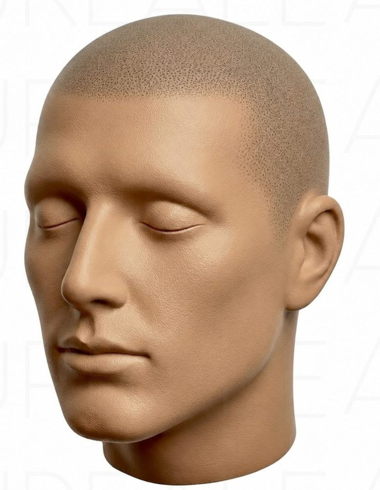
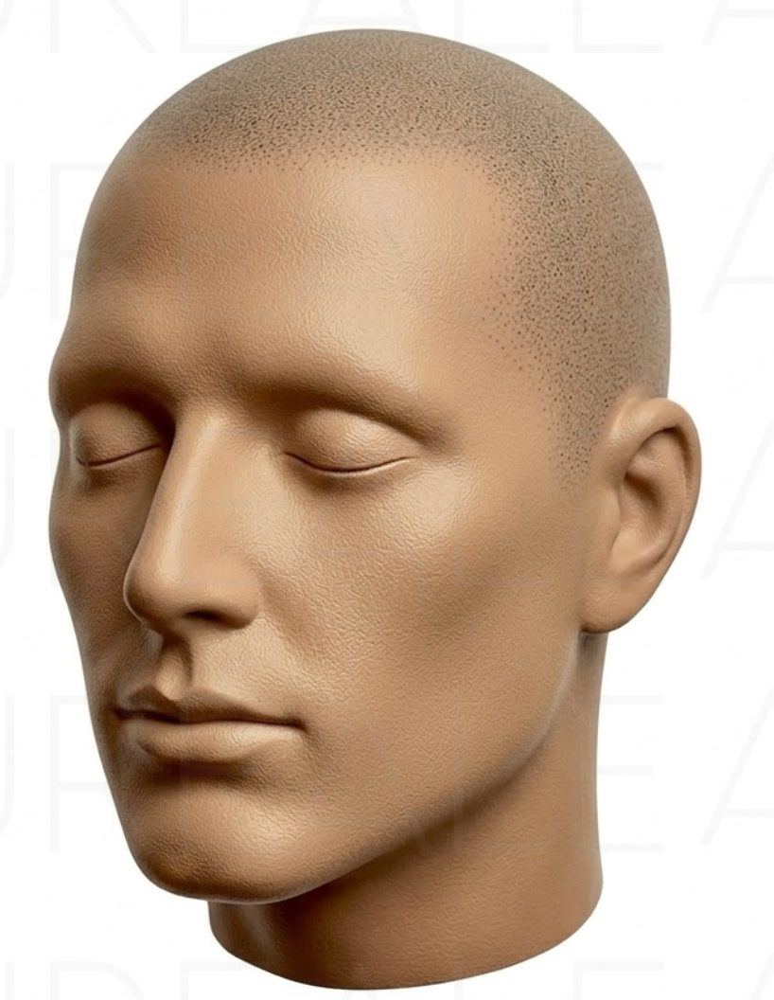
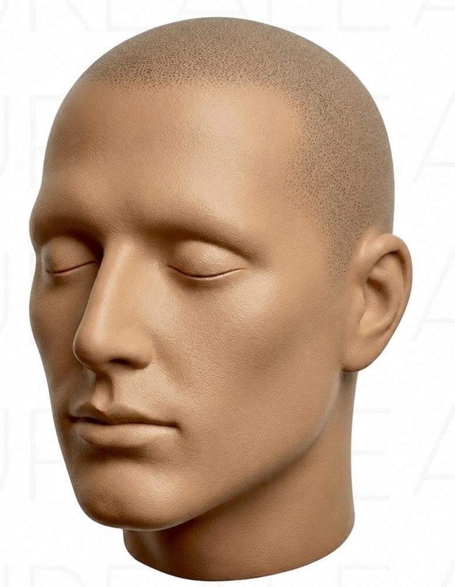
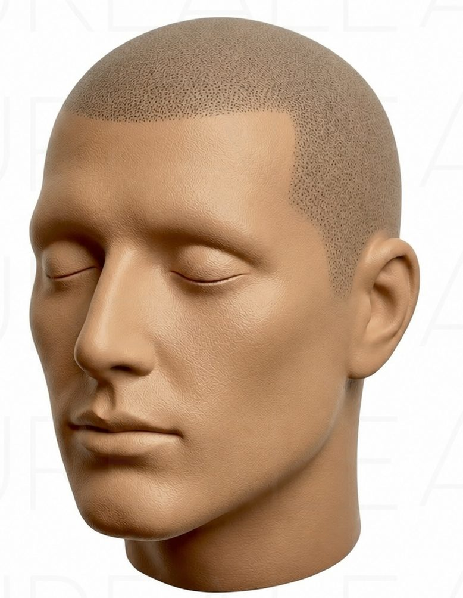
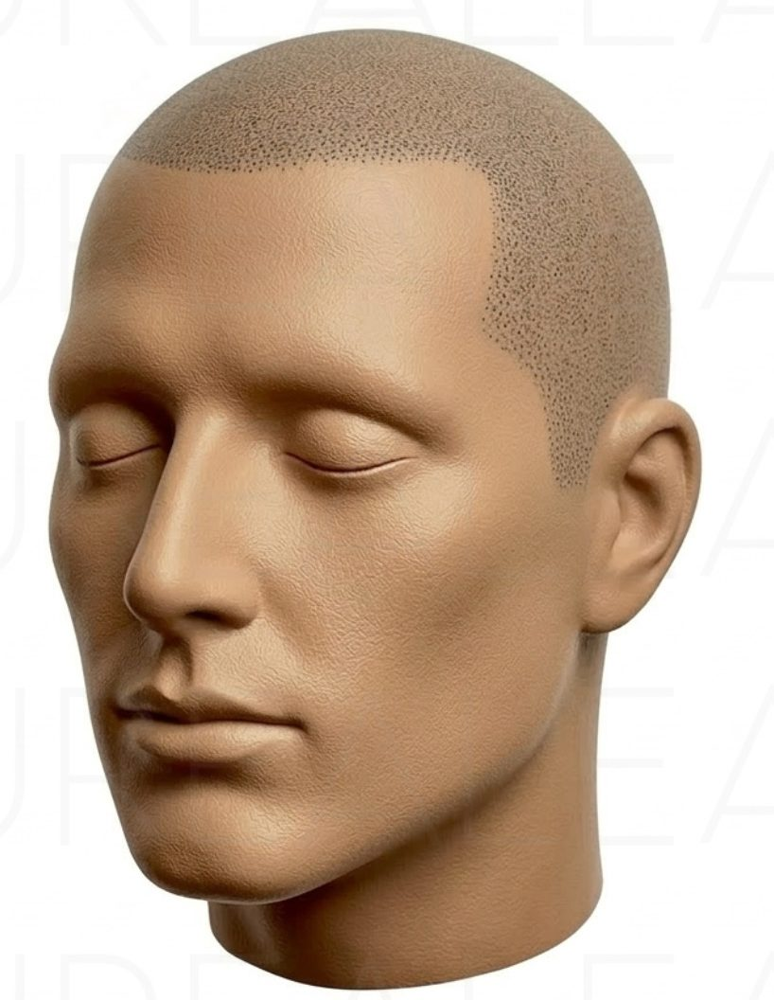
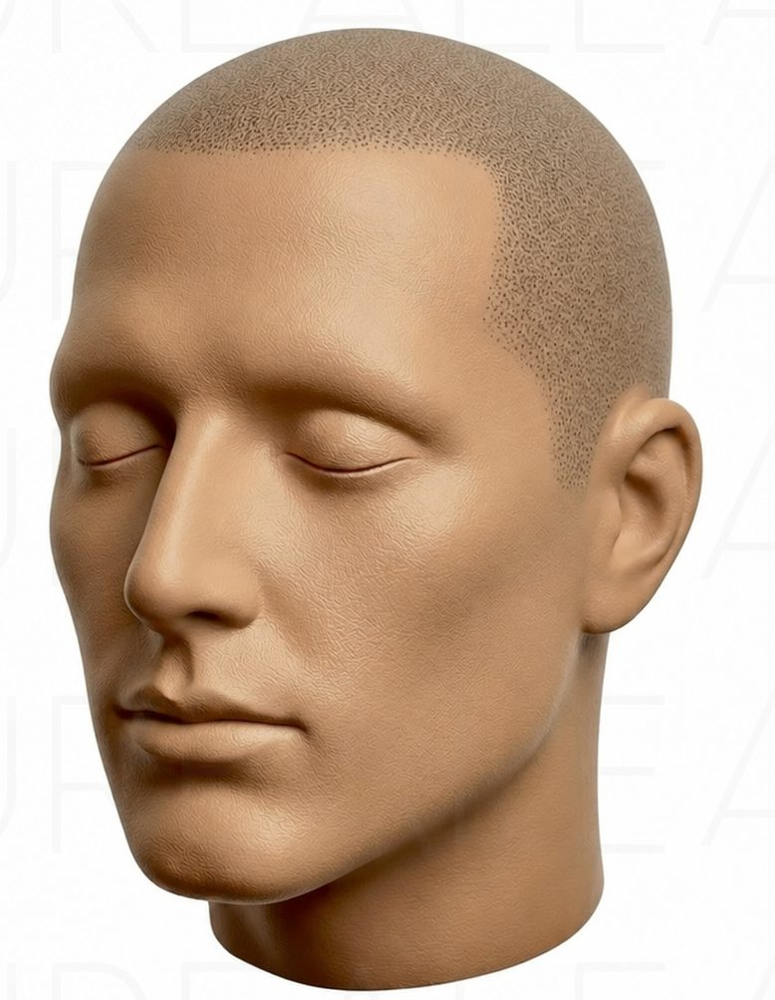
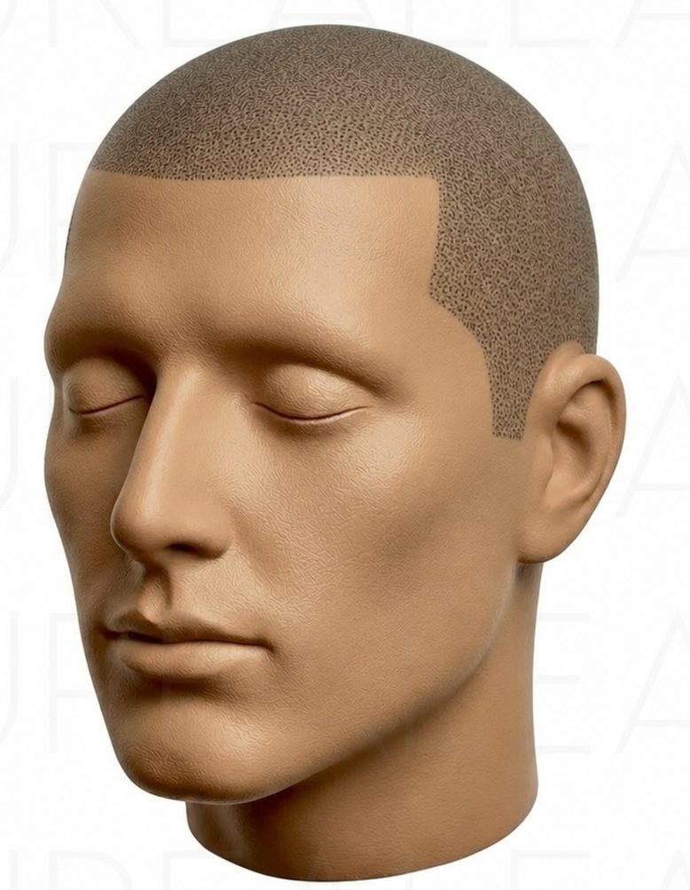
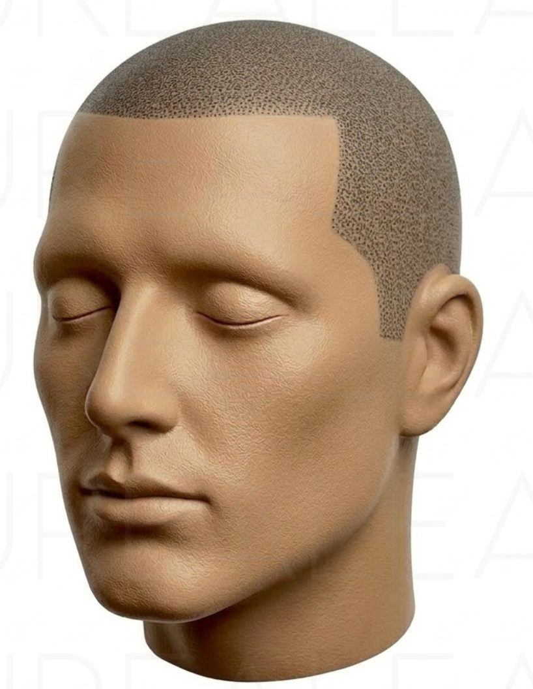
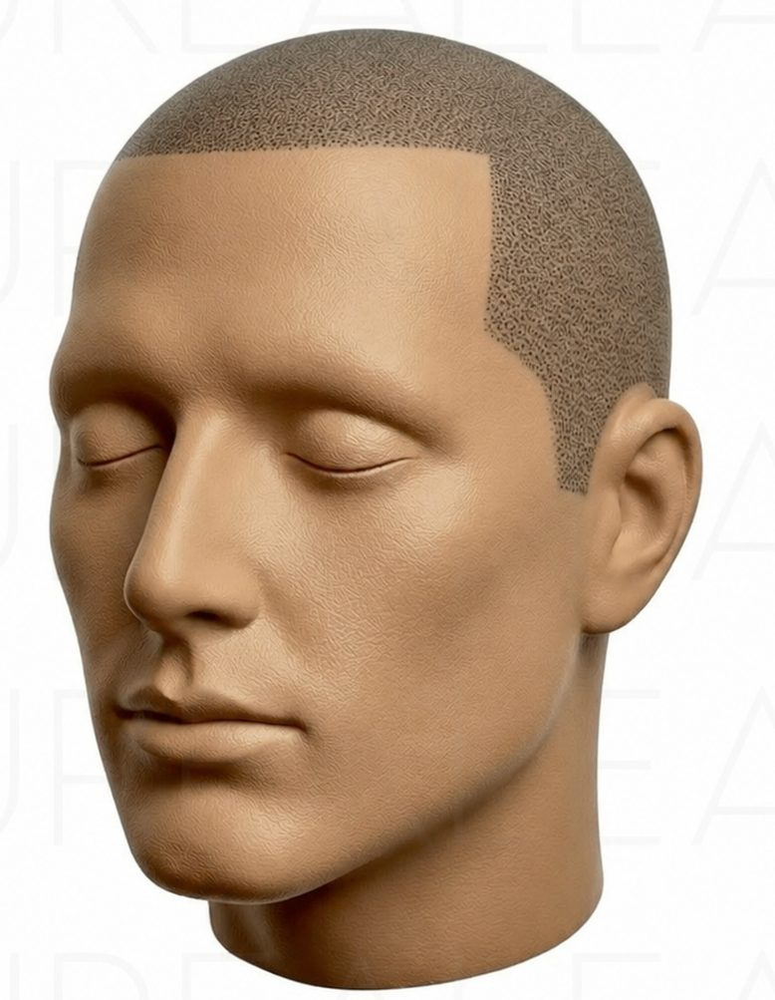
La definizione non cambia il prezzo: una linea più sfumata o più netta richiede lo stesso lavoro. Cambia l’effetto, e conta molto la naturalezza.
Una linea molto netta è tipica di chi ha capelli molto fitti e pelle molto scura, dove il contrasto tra capello e fronte è alto per natura. Nelle carnagioni europee l’attaccatura naturale è di solito sfumata, al massimo di livello 1 o 2: una definizione 3 apparirebbe quasi sempre poco naturale, per questo tendo a proporre un effetto meno netto. Personalmente preferisco il livello 1, morbido e molto simile all’effetto naturale di una rasatura; le persone molto giovani possono scegliere anche il 2 senza che il risultato appaia innaturale. Resta una preferenza: il progetto si costruisce sulla persona.
Una forma a parte è l’attaccatura a V, con una punta centrale che scende verso la fronte e due lati che risalgono. È una variante naturale e su alcuni visi sta bene, a seconda della forma della fronte e delle proporzioni del volto. Come per ogni altra forma, non si sceglie per moda: si valuta sulla persona, entro il limite anatomico e in modo coerente con l’età.
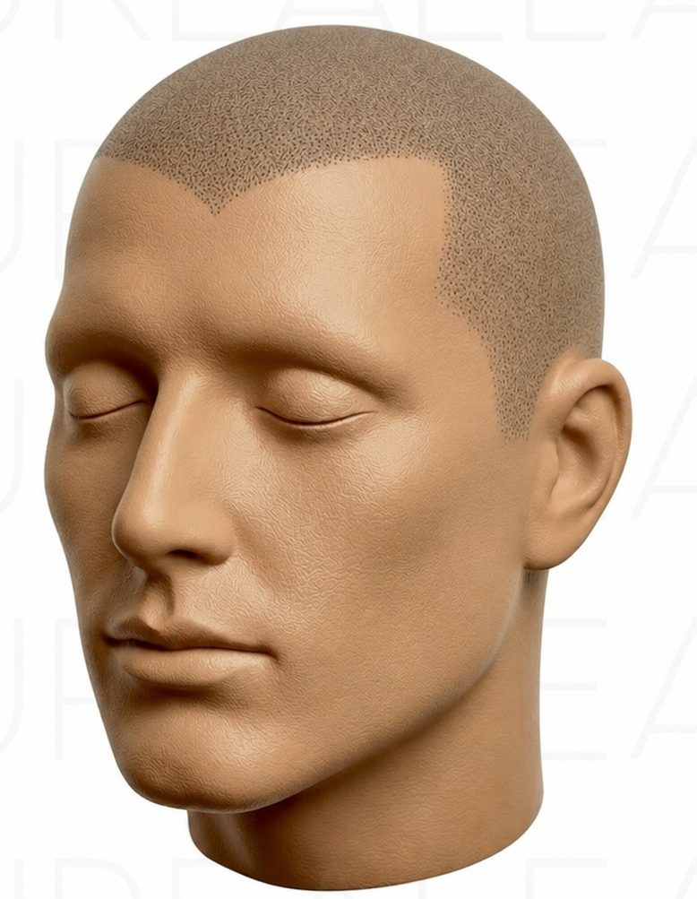
Nel mio lavoro mi è capitato un cliente che, dopo un trapianto, aveva scelto proprio la V. Quando è passato dall’infoltimento all’effetto rasato ho dovuto rispettare quel disegno: una linea diversa accanto a quella ricostruita sarebbe apparsa innaturale.
Per densità intendo quanti bulbi piliferi evidenti ci sono, per esempio, in un centimetro quadrato nelle zone in cui i capelli rasati sono presenti. Quel disegno di punti, già presente sotto i capelli residui, è il riferimento che la tricopigmentazione riproduce sulle zone senza capelli.
La densità di arrivo dipende da quella di partenza. Se un’alopecia interessa le zone 1, 2 e 3 della mappa del diradamento e nel resto della testa i capelli hanno una densità leggera, ottenere un risultato di densità 3 solo sulle zone senza capelli creerebbe un contrasto visibile con l’area circostante. Per un insieme omogeneo bisogna portare tutta la testa alla stessa densità, anche dove i capelli ci sono. Si può fare, ma aumentano la superficie da trattare, il tempo di lavoro e il preventivo: per questo la densità desiderata, confrontata con quella di partenza, va valutata fin dall’inizio. Come si costruisce il preventivo è spiegato nella pagina sulla tricopigmentazione a Roma.
Con l’effetto infoltimento i capelli ci sono, e l’attaccatura non si può abbassare: bisogna restare all’interno del disegno originale. Un pigmento posto oltre l’attaccatura naturale lascerebbe visibili i puntini della tricopigmentazione e, con i capelli lunghi, si noterebbe subito la differenza. Con l’effetto rasato la linea si disegna, quindi c’è più libertà di progetto, ma sempre entro il limite anatomico e restando coerente con l’età e con il viso.
Lo stesso criterio vale per le cicatrici da trapianto: si lavora sempre in accordo con ciò che c’è già.
Preferenze e gusto si fermano davanti a un limite anatomico. Si chiede alla persona di alzare le sopracciglia: sulla fronte compaiono le rughe di espressione, dovute all’azione del muscolo frontale. Tutta la pelle che si muove è pelle del viso e non può essere trattata con la tricopigmentazione; si parte dal cuoio capelluto, che resta fermo anche quando le sopracciglia si sollevano. Questo è il limite massimo, oltre il quale nessun progetto o idea può spingersi.
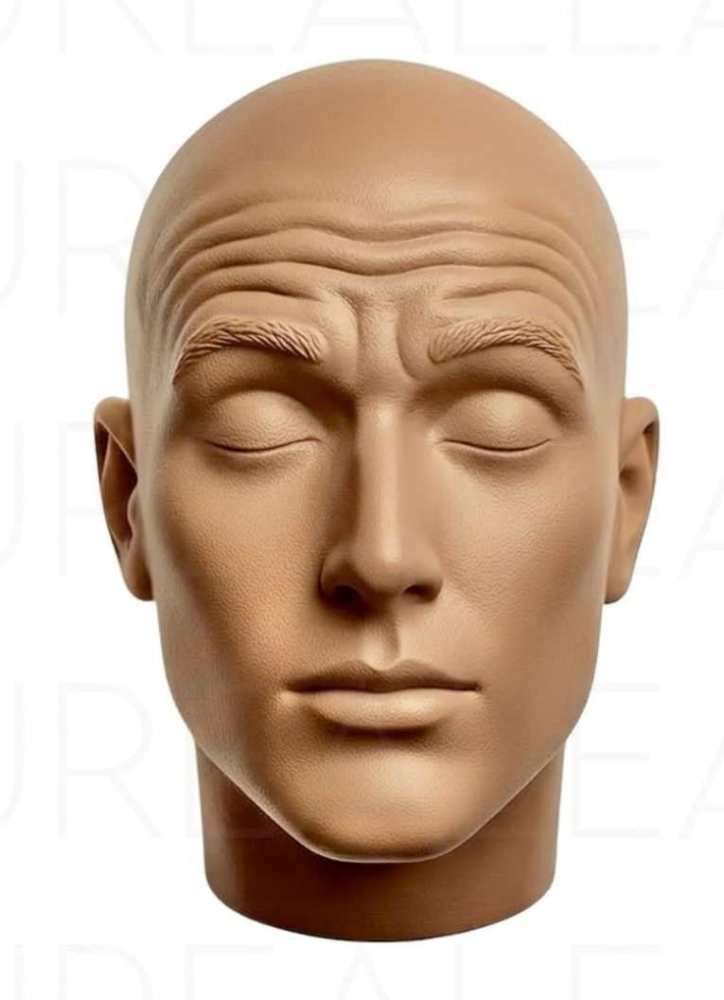
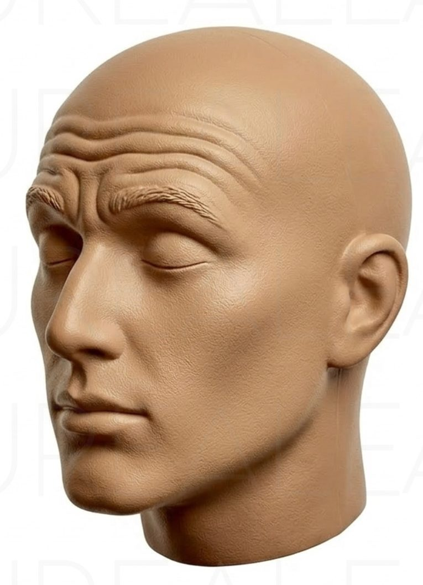
Le misure e il progetto si definiscono di persona, durante la consulenza gratuita, guardando fronte, forma della testa e capelli residui. Le immagini di questo articolo sono riferimenti illustrativi, non una promessa di risultato.
Prenota la consulenza gratuita
Simona Reale
Tricopigmentazione e dermopigmentazione a Roma. Dermopigmentista dal 2008, sono docente di tricopigmentazione presso MB Accademia, accreditata dalla Regione Lazio. Chi sono